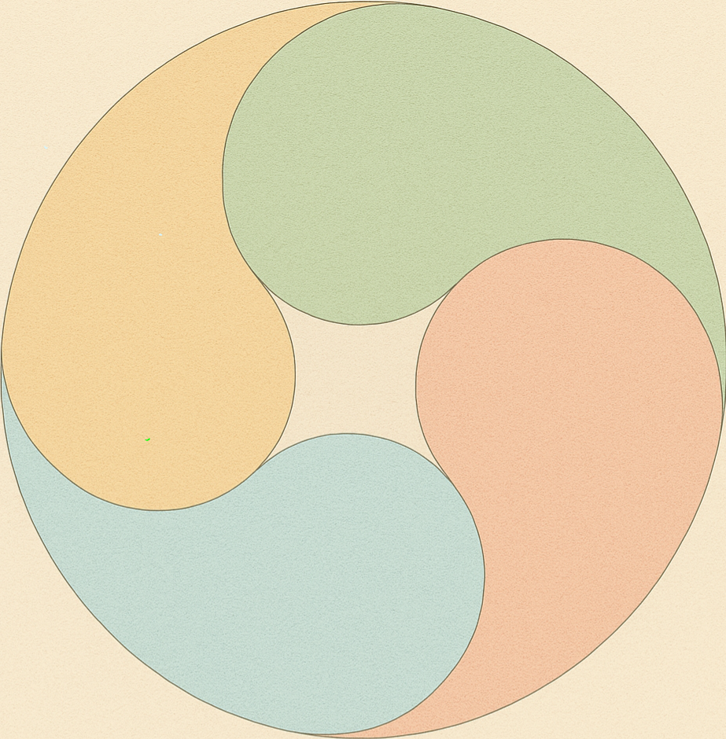
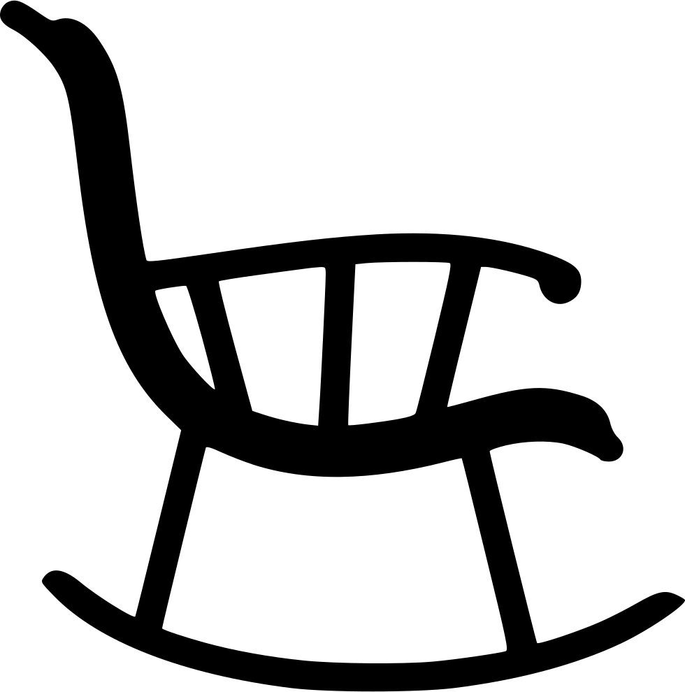

Kinder- und Jugendlichenpsychotherapie in Köln – Bastian Schwinn –
ressourcen- und bedürfnisorientierte Psychotherapie für Kinder, Jugendliche und junge Erwachsene


Therapieverständnis
Bastian Schwinn
Kosten
Kontakt